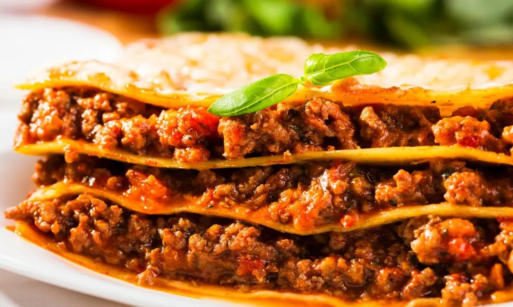

Lasanha

prato clássico da culinária Italiana
A baixo são listados os ingredientes para uma lasanha rica e saborosa
- Massa de lasanha(pré-cozida ou fresca)
- Molho bolonhesa:
- Carne moido
- Cebola picada
- Alho picado
- Molho de tomate
- Sal e pimenta a gosto
- Azeite ou óleo
- cheiro-verde ou manjereição(opcional)
- Molho branco (bechamel):
- Leite
- Mantega
- Farinha de trigo
- Noz-moscada (opcional)
- Sal
- Quijos:
- Mussarela (fatiada ou ralada)
- Parmesão ralado (para gratinar)
Como Preparar-lo
- Refogue cebola e alho, junte carne moída, doure e adicione molho de tomate. Reserve (molho bolonhesa)
- Faça o molho branco: derreta manteiga, adicione farinha, mexa, coloque leire aos poucos até engrossar. Tempere.
- Monte em camadas: molho bolenhesa, messac, molho branco, queijo. Repita
- Cubra com queijo e leve ao forno (200ºC) por 30-40 min até gratinar.
Voltar ao Início